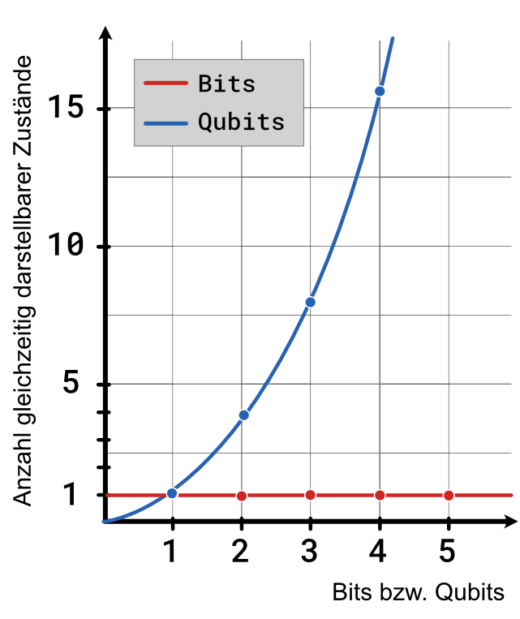

Quantencomputer – Anzahl darstellbarer Zustände
Auf den letzten Seiten haben wir gesehen:
- Qubits können nicht nur in den beiden Zuständen 0 und 1 sein, sondern auch in einer Superposition aus 0 und 1. Dann haben sie eine gewisse Wahrscheinlichkeit als 0 bzw. 1 gemessen zu werden. Eine Messung zerstört allerdings die Superposition.
- Auch wenn die Messergebnisse eines Qubits zufällig sind, ist das Qubit dennoch stets in einem genau definierten Zustand.
- Zwei Qubits können miteinander verschränkt werden. Misst man dann den Zustand eines der Qubits, kennt man auch automatisch den Zustand des anderen Qubits.
- Quantencomputer nutzen spezielle Quantengatter, um den Zustand von Qubits zu manipulieren.
Der Vorteil von Quantencomputern für bestimmte Probleme zeigt sich, wenn wir uns ansehen, wie viele Informationen wir mit \(n\) Qubits potenziell speichern und verarbeiten können:
Während ein klassischer Computer mit \(n\) Bits nur einen Zustand darstellen kann, kann ein Quantencomputer mit \(n\) Qubits \(2^n\) Zustände gleichzeitig repräsentieren, wobei jedem Zustand eine bestimmte Wahrscheinlichkeit zugeordnet ist.
Ein Computer mit 2 Bits kann beispielsweise im Zustand 10 sein, also die Zahl 2 repräsentieren. Ein Quantencomputer mit 2 Qubits in einer Superposition kann als 00, 01, 10 und 11 gemessen werden, also mit bestimmten Wahrscheinlichkeiten die Zahlen 0,1,2 und 3 gleichzeitig repräsentieren.
Mit 2 Qubits lassen sich so zunächst schon 4 Zustände gleichzeitig darstellen, bei 3 Qubits erhöht sich diese Zahl auf 8 und bei 4 Qubits sind es sogar 16 (Schau dir dazu den Schaltkreis unten an!). Schon mit 300 Qubits kann man mehr Zustände gleichzeitig darstellen als es Teilchen im Universum gibt.
Wahnsinn oder? \(n\) Qubits können also in einer Superposition aus \(2^n\) Zuständen sein.
Messen können wir aber trotzdem nur einen dieser Zustände. Daher brauchen wir clevere Algorithmen, die die Besonderheiten von Qubits nutzen und dafür sorgen, dass das richtige Messergebnis aus diesen \(2^n\) Zuständen sehr wahrscheinlich wird. Mit den richtigen Algorithmen könnten Quantencomputer dann u.a. in der Erforschung neuer Medikamente und Impfstoffe, bei der Verkehrsoptimierung oder bei der Entwicklung von KI-Lösungen helfen. Aber: Nicht alle Probleme können durch Quantencomputer effizienter gelöst werden.
Moderne Quantencomputer verfügen aktuell über gut 50 bis 70 Qubits. 50 bis 70 Qubits klingt schonmal nicht schlecht! Aber in der Praxis reicht es nicht nur, eine große Anzahl von Qubits zu haben, sondern ihr Zustand muss auch über einen möglichst langen Zeitraum gehalten werden können. Daran scheitern moderne Quantencomputer (noch) und sind so bisher kaum praxistauglich.
Auswertung
Lösung
Die einfachste Möglichkeit das zu erreichen, ist durch Anwendung eines Hadamard-Gatters H auf jedes Qubit. Entsprechend sind 4 Gatter ausreichend.